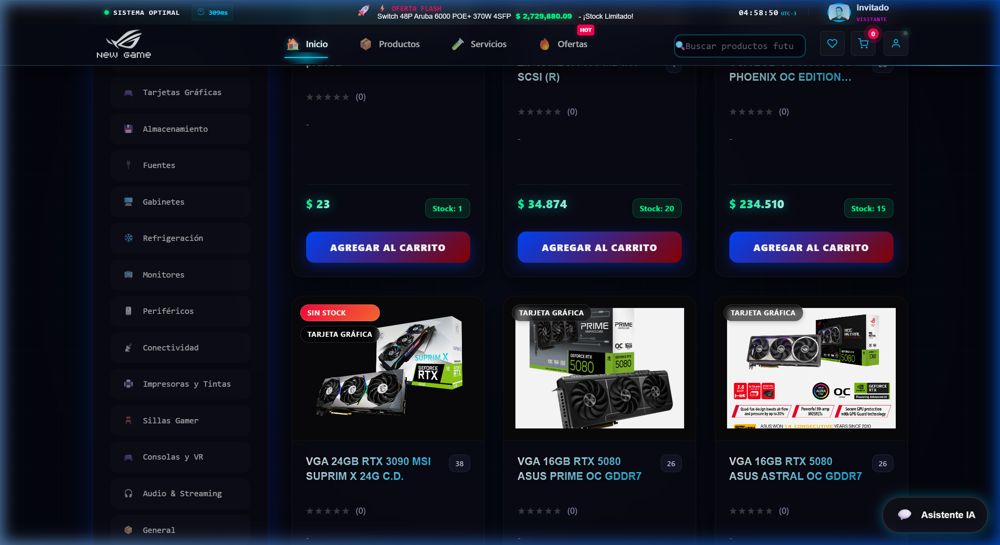
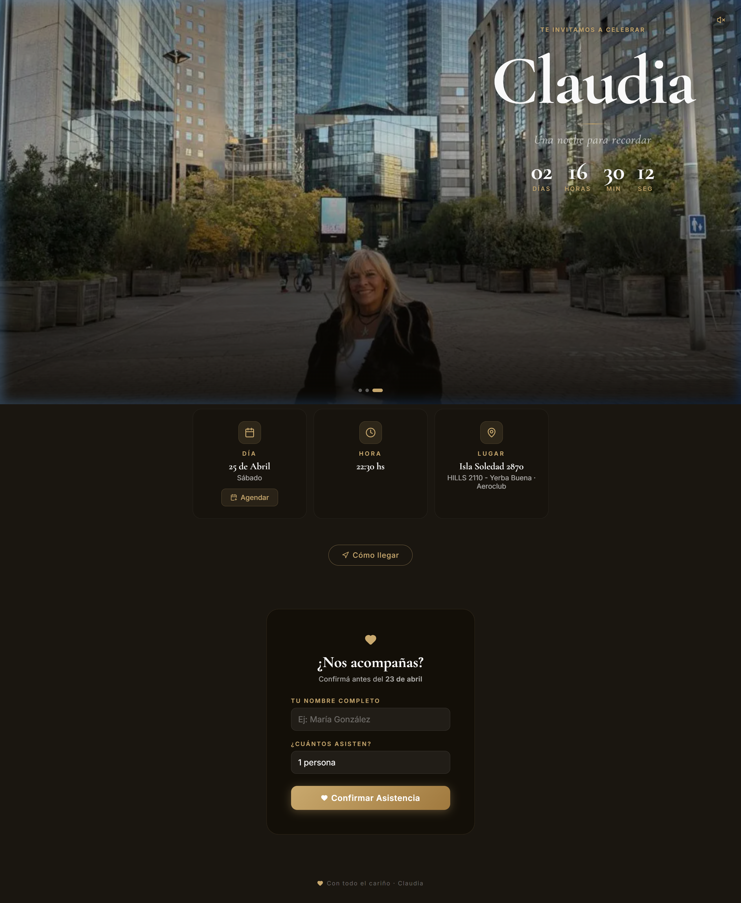

Ningún sistema es mejor que su
Arquitectura Humana
Arquitecto de sistemas y orquestador de infraestructura agéntica. Yo diseño la lógica; la IA es mi motor de ejecución de alta frecuencia para garantizar robustez y eliminar inconsistencias.
Arquitectura de Agentes Internos
Ecosistema obligatorio que gobierna cada línea de código.
Architect
Diseña flujos, módulos y escalabilidad. Define el norte técnico.
Executor
Implementación de alto rendimiento bajo presión controlada.
Auditor
Bloquea código incorrecto. Detecta deuda técnica. Cierra loops.
Security
Detección de secretos, scripts destructivos y vulnerabilidades.
Cleaner
Elimina basura, duplicación y scripts de debug permanentes.
Casos de Estudio
Devin Autonomous Agent
Orquestación multi-agente con memoria RAG en Qdrant.

QuantumShop Enterprise
Plataforma escalable con IA Gemini integrada y búsqueda vectorial.
ROBOT-ERP
Sistema de gestión interna con auditoría de agentes IA.

DiComo Turismo
Arquitectura Vanilla JS ultra-liviana con optimización de assets vía Cloudinary.

Invitaciones Interactivas
Gestión de eventos con RSVP real-time y sincronización de calendario.
Planes & Inversión
Soluciones de ingeniería adaptadas al mercado local con visión global.
Presencia Digital
Landing pages y sitios institucionales premium.
- Diseño 100% Personalizado
- Invitaciones Digitales Premium
- ROI: Posicionamiento de Marca
- Soporte & Hosting bonificado
E-Commerce & Gestión
Tiendas online y sistemas de gestión (ERP).
- Pasarelas de Pago & Stock
- ROI: Automatización de Ventas
- Panel de Admin avanzado
Sistemas IA & Enterprise
Agentes autónomos y arquitecturas críticas.
- Agentes IA (tipo Devin)
- ROI: Eficiencia Operativa +80%
- Auditoría de Seguridad K3
* Precios de referencia para LATAM. Para proyectos internacionales, consultar presupuesto en USD.
Todos los planes son adaptables según el alcance y requerimientos específicos.
Technical Manifesto
> loading loop_k3_v3...
[STATUS] Auditor Active | 0 TS Errors Detected
> query: "What is your core rule?"
"Todo código que sobrevive 24h es código de producción. No existe el prototipo permanente, solo la deuda técnica acumulada por falta de disciplina."
> query: "How do you handle failures?"
"Fail fast, audit deep. Si tsErrors > 0, el commit es bloqueado. La IA no ayuda a codear rápido, ayuda a no romper el sistema."
> query: "Versioning & Deployment?"
"SemVer strictly enforced. CI/CD Pipelines as the only gateway to production. No manual deployments allowed."
>
Status Monitor
SISTEMAS OPERATIVOS / AUDITORÍA EN TIEMPO REAL